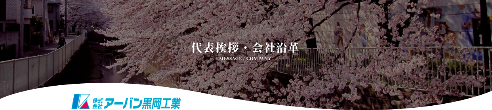

人づくりが会社づくり、街づくりへ
弊社は昭和32年の創業以来、「都市リメイクをサポート」との社是のもと、斫り・解体工事の高品質施工と技術革新、そして従業員の技能教育・安全教育に積極的に取り組み、今日まで信頼ある施工実績をつみ重ねてくる事が出来ました。
そして今、時代は大きく、またかつてないスピードで変化しております。社会的インフラの老朽化、加速度的技術革新、少子高齢化による熟練工不足、持続可能な社会実現の為 の産業廃棄物の適正な処理、騒音・振動・粉塵などの環境対策など、時代のニーズに応える解体施工の 技術・ノウハウが必要です。
その為に、弊社では
- 現場では積極的に新しい工法開発に挑戦
- あらゆる工具を取り揃え、自社での整備・修理施設と整備技術者を完備して取り組んでおります。
また、新しい時代の解体施工を支える1 番重要なのはやはり「人」であります。
弊社の職人は、コンクリート解体・内装解体は勿論、粉塵負圧養生から仮設足場組み・解体材の搬出 方法・清掃クリーニングまで通底した人材であります。
「人づくりが会社づくり、街づくり」との企業理念のもと、従業員の資格取得・キャリアアップ・処 遇改善にも大きく取り組んでおります。
今後も、「人づくり」「安全第一」「コンプライアンス遵守」「新しい工法開発」「新しい工具への挑戦」 を誇りとし、あらゆるニーズに応えるきめ細やかな解体施工、様々な環境に配慮した高品質施工を目指して、従業員一同、弛まぬ努力を積み重ねて参ります。
何卒、今後とも格別なる御懇情、御引き立て賜り、なお一層の御用命を一重にお願い申し上げます。

代表取締役
岡部 辰夫